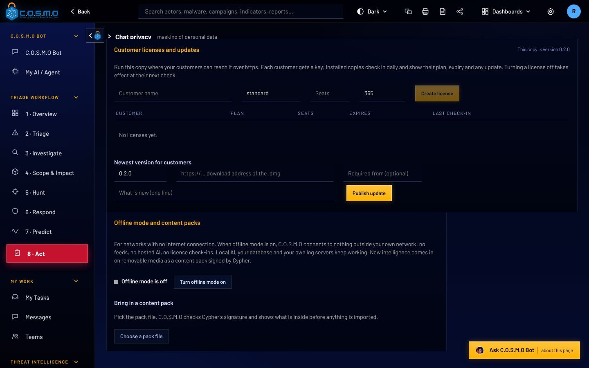

Built to run where the internet is not allowed.
C.O.S.M.O runs on a server you control. In offline mode it opens no connection outside your own network. New intelligence and new versions arrive on removable media, signed by Cypher, and are checked before anything is installed.
Updates and intelligence come in signed, and are checked first.
A super admin switches offline mode on. Local AI, your database and your own log servers keep working. Everything else stops reaching out.
New threat intelligence comes as a signed content pack, and C.O.S.M.O shows what is inside before anyone imports it. An update is two files, the package and its signed manifest.
- Licenses, content packs and updates are signed (Ed25519) and checked offline
- An update backs up first and replaces only the changed files
- If the new version does not start, the old one is put back by itself
- How it works
- Removable media
- Signature checked
- Super admin installs
- Backup, then update

Markings, sign-in rules and cryptography the way DoD expects them.
Which classification levels a copy may use is set by its signed license. Outside government mode, C.O.S.M.O uses neutral wording, because it is just as useful to a bank or a hospital.
Classification markings
A system banner, and markings on what comes in: reports, indicators, documents and files, written the way the CAPCO register and DoDM 5200.01 write them, with CUI under 32 CFR 2002.
A person marks. C.O.S.M.O carries the mark, displays it and warns. A copy licensed for CUI cannot be switched to SECRET locally.
DoD sign-in rules
- Three wrong passwords lock the account for at least 30 minutes
- Passwords of 15 characters or more, changed every 60 days
- Idle sign-out at 15 minutes or less, which cannot be switched off
- Smart card (CAC/PIV) and two-step sign-in
FIPS mode
One setting switches on the FIPS cryptography provider before anything else starts and runs a self-test. If the self-test fails, C.O.S.M.O does not start.
C.O.S.M.O is not on the DoDIN Approved Products List. It is ready to start that process: FIPS mode, IPv6, DoD sign-in rules, audit with source address, and CAC/PIV.
Use the AI you are allowed to use, or none.
What comes in
- Firewalls and sensors
Syslog, CEF, Suricata and Zeek - Logs and your tools
Splunk, Elasticsearch, SQL, S3, Azure - Threat intelligence
RSS, TAXII, MISP and STIX files - Signed content packs
On removable media, when offline
Inside your network
- C.O.S.M.O server
Windows Server, Linux, macOS or Docker, with its own PostgreSQL database - Your teams
Work orders, work packs and My Tasks
Which AI answers
- Government cloud AI
Azure Government, Bedrock, GSA USAi - Commercial AI
Claude or OpenAI - Local models
Ollama, LM Studio, vLLM, llama.cpp - No AI at all
Triage, packs and rules still work - Offline mode
Only local models. No connection leaves your network.
Government clouds
Azure Government, Amazon Bedrock in GovCloud and GSA USAi, or your agency’s own AI gateway: paste the address and key, pick a model.
On your own hardware
Ollama, LM Studio, vLLM or llama.cpp. Only models from American developers are offered for download.
No AI at all
Triage decides from the evidence and your routing rules, and the work packs and Malware Lab rules are still built.

Talk to a veteran-owned team about your network.
Tell us what your network allows. We will show you how C.O.S.M.O fits it, offline or online.
C.O.S.M.O is built and supported by Cypher, LLC.
Cypher is a Service-Disabled Veteran-Owned Small Business, founded in 2009 and headquartered in Ashburn, Virginia. Its technical staff are 100% cleared and support customers onsite, across the Department of Defense, the Intelligence Community and civilian agencies.
- Status
- Service-Disabled Veteran-Owned Small Business (SDVOSB)
- Founded
- 2009
- Address
- 44679 Endicott Dr, Suite 314
Ashburn, VA 20147 - CAGE
- 6ZPW9
- UEI
- UVKETSQ7AQG3
- Phone
- (571) 206-1401